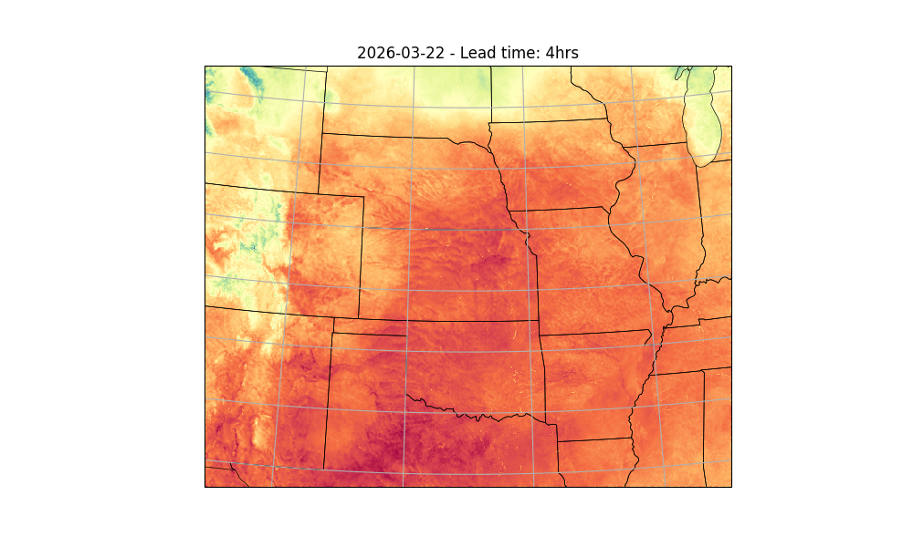

Note
Go to the end to download the full example code.
Running StormCast Inference#
Basic StormCast inference workflow.
This example will demonstrate how to run a simple inference workflow to generate a basic determinstic forecast using StormCast. For details about the stormcast model, see
# /// script
# dependencies = [
# "earth2studio[data,stormcast] @ git+https://github.com/NVIDIA/earth2studio.git",
# "cartopy",
# ]
# ///
Set Up#
All workflows inside Earth2Studio require constructed components to be
handed to them. In this example, let’s take a look at the most basic:
earth2studio.run.deterministic().
Thus, we need the following:
Prognostic Model: Use the built in StormCast Model
earth2studio.models.px.StormCast.Datasource: Pull data from the HRRR data api
earth2studio.data.HRRR.IO Backend: Let’s save the outputs into a Zarr store
earth2studio.io.ZarrBackend.
StormCast also requires a conditioning data source. We use a forecast data source here,
GFS_FX earth2studio.data.GFS_FX which is the default, but a non-forecast
data source such as ARCO could also be used with appropriate time stamps.
from datetime import datetime, timedelta
from loguru import logger
from tqdm import tqdm
logger.remove()
logger.add(lambda msg: tqdm.write(msg, end=""), colorize=True)
import os
os.makedirs("outputs", exist_ok=True)
from dotenv import load_dotenv
load_dotenv() # TODO: make common example prep function
from earth2studio.data import HRRR
from earth2studio.io import ZarrBackend
from earth2studio.models.px import StormCast
# Load the default model package which downloads the check point from NGC
# Use the default conditioning data source GFS_FX
package = StormCast.load_default_package()
model = StormCast.load_model(package)
# Create the data source
data = HRRR()
# Create the IO handler, store in memory
io = ZarrBackend()
Execute the Workflow#
With all components initialized, running the workflow is a single line of Python code. Workflow will return the provided IO object back to the user, which can be used to then post process. Some have additional APIs that can be handy for post-processing or saving to file. Check the API docs for more information.
For the forecast we will predict for 4 hours
import earth2studio.run as run
nsteps = 4
today = datetime.today() - timedelta(days=1)
date = today.isoformat().split("T")[0]
io = run.deterministic([date], nsteps, model, data, io)
print(io.root.tree())
2026-03-23 20:37:24.592 | INFO | earth2studio.run:deterministic:78 - Running simple workflow!
2026-03-23 20:37:24.592 | INFO | earth2studio.run:deterministic:85 - Inference device: cuda
Fetching HRRR data: 0%| | 0/99 [00:00<?, ?it/s]
2026-03-23 20:37:25.530 | DEBUG | earth2studio.data.hrrr:fetch_array:509 - Fetching HRRR grib file: noaa-hrrr-bdp-pds/hrrr.20260322/conus/hrrr.t00z.wrfnatf00.grib2 244555786-791719
Fetching HRRR data: 0%| | 0/99 [00:00<?, ?it/s]
2026-03-23 20:37:25.551 | DEBUG | earth2studio.data.hrrr:fetch_array:509 - Fetching HRRR grib file: noaa-hrrr-bdp-pds/hrrr.20260322/conus/hrrr.t00z.wrfnatf00.grib2 84501600-1053821
Fetching HRRR data: 0%| | 0/99 [00:00<?, ?it/s]
2026-03-23 20:37:25.572 | DEBUG | earth2studio.data.hrrr:fetch_array:509 - Fetching HRRR grib file: noaa-hrrr-bdp-pds/hrrr.20260322/conus/hrrr.t00z.wrfsfcf00.grib2 42010487-2143472
Fetching HRRR data: 0%| | 0/99 [00:00<?, ?it/s]
2026-03-23 20:37:25.583 | DEBUG | earth2studio.data.hrrr:fetch_array:509 - Fetching HRRR grib file: noaa-hrrr-bdp-pds/hrrr.20260322/conus/hrrr.t00z.wrfnatf00.grib2 18340930-1096356
Fetching HRRR data: 0%| | 0/99 [00:00<?, ?it/s]
2026-03-23 20:37:25.603 | DEBUG | earth2studio.data.hrrr:fetch_array:509 - Fetching HRRR grib file: noaa-hrrr-bdp-pds/hrrr.20260322/conus/hrrr.t00z.wrfnatf00.grib2 112683916-1256865
Fetching HRRR data: 0%| | 0/99 [00:00<?, ?it/s]
2026-03-23 20:37:25.625 | DEBUG | earth2studio.data.hrrr:fetch_array:509 - Fetching HRRR grib file: noaa-hrrr-bdp-pds/hrrr.20260322/conus/hrrr.t00z.wrfnatf00.grib2 37459967-2188083
Fetching HRRR data: 0%| | 0/99 [00:00<?, ?it/s]
2026-03-23 20:37:25.648 | DEBUG | earth2studio.data.hrrr:fetch_array:509 - Fetching HRRR grib file: noaa-hrrr-bdp-pds/hrrr.20260322/conus/hrrr.t00z.wrfnatf00.grib2 9313715-1052913
Fetching HRRR data: 0%| | 0/99 [00:00<?, ?it/s]
2026-03-23 20:37:25.669 | DEBUG | earth2studio.data.hrrr:fetch_array:509 - Fetching HRRR grib file: noaa-hrrr-bdp-pds/hrrr.20260322/conus/hrrr.t00z.wrfnatf00.grib2 33198954-1057891
Fetching HRRR data: 0%| | 0/99 [00:00<?, ?it/s]
2026-03-23 20:37:25.690 | DEBUG | earth2studio.data.hrrr:fetch_array:509 - Fetching HRRR grib file: noaa-hrrr-bdp-pds/hrrr.20260322/conus/hrrr.t00z.wrfnatf00.grib2 82065497-2436103
Fetching HRRR data: 0%| | 0/99 [00:00<?, ?it/s]
2026-03-23 20:37:25.713 | DEBUG | earth2studio.data.hrrr:fetch_array:509 - Fetching HRRR grib file: noaa-hrrr-bdp-pds/hrrr.20260322/conus/hrrr.t00z.wrfnatf00.grib2 30853403-1089571
Fetching HRRR data: 0%| | 0/99 [00:00<?, ?it/s]
2026-03-23 20:37:25.734 | DEBUG | earth2studio.data.hrrr:fetch_array:509 - Fetching HRRR grib file: noaa-hrrr-bdp-pds/hrrr.20260322/conus/hrrr.t00z.wrfsfcf00.grib2 24087097-626548
Fetching HRRR data: 0%| | 0/99 [00:00<?, ?it/s]
2026-03-23 20:37:25.752 | DEBUG | earth2studio.data.hrrr:fetch_array:509 - Fetching HRRR grib file: noaa-hrrr-bdp-pds/hrrr.20260322/conus/hrrr.t00z.wrfnatf00.grib2 70902018-1074412
Fetching HRRR data: 0%| | 0/99 [00:00<?, ?it/s]
2026-03-23 20:37:25.773 | DEBUG | earth2studio.data.hrrr:fetch_array:509 - Fetching HRRR grib file: noaa-hrrr-bdp-pds/hrrr.20260322/conus/hrrr.t00z.wrfnatf00.grib2 57403276-1079912
Fetching HRRR data: 0%| | 0/99 [00:00<?, ?it/s]
2026-03-23 20:37:25.793 | DEBUG | earth2studio.data.hrrr:fetch_array:509 - Fetching HRRR grib file: noaa-hrrr-bdp-pds/hrrr.20260322/conus/hrrr.t00z.wrfnatf00.grib2 46201947-1030099
Fetching HRRR data: 0%| | 0/99 [00:00<?, ?it/s]
2026-03-23 20:37:25.814 | DEBUG | earth2studio.data.hrrr:fetch_array:509 - Fetching HRRR grib file: noaa-hrrr-bdp-pds/hrrr.20260322/conus/hrrr.t00z.wrfnatf00.grib2 295035317-1273710
Fetching HRRR data: 0%| | 0/99 [00:00<?, ?it/s]
2026-03-23 20:37:25.836 | DEBUG | earth2studio.data.hrrr:fetch_array:509 - Fetching HRRR grib file: noaa-hrrr-bdp-pds/hrrr.20260322/conus/hrrr.t00z.wrfnatf00.grib2 344070397-765144
Fetching HRRR data: 0%| | 0/99 [00:00<?, ?it/s]
2026-03-23 20:37:25.856 | DEBUG | earth2studio.data.hrrr:fetch_array:509 - Fetching HRRR grib file: noaa-hrrr-bdp-pds/hrrr.20260322/conus/hrrr.t00z.wrfnatf00.grib2 246392895-768898
Fetching HRRR data: 0%| | 0/99 [00:00<?, ?it/s]
2026-03-23 20:37:25.875 | DEBUG | earth2studio.data.hrrr:fetch_array:509 - Fetching HRRR grib file: noaa-hrrr-bdp-pds/hrrr.20260322/conus/hrrr.t00z.wrfnatf00.grib2 31942974-1255980
Fetching HRRR data: 0%| | 0/99 [00:00<?, ?it/s]
2026-03-23 20:37:25.897 | DEBUG | earth2studio.data.hrrr:fetch_array:509 - Fetching HRRR grib file: noaa-hrrr-bdp-pds/hrrr.20260322/conus/hrrr.t00z.wrfnatf00.grib2 127143646-952874
Fetching HRRR data: 0%| | 0/99 [00:00<?, ?it/s]
2026-03-23 20:37:25.917 | DEBUG | earth2studio.data.hrrr:fetch_array:509 - Fetching HRRR grib file: noaa-hrrr-bdp-pds/hrrr.20260322/conus/hrrr.t00z.wrfnatf00.grib2 109206166-2451882
Fetching HRRR data: 0%| | 0/99 [00:00<?, ?it/s]
2026-03-23 20:37:25.942 | DEBUG | earth2studio.data.hrrr:fetch_array:509 - Fetching HRRR grib file: noaa-hrrr-bdp-pds/hrrr.20260322/conus/hrrr.t00z.wrfnatf00.grib2 245347505-1045390
Fetching HRRR data: 0%| | 0/99 [00:00<?, ?it/s]
2026-03-23 20:37:25.962 | DEBUG | earth2studio.data.hrrr:fetch_array:509 - Fetching HRRR grib file: noaa-hrrr-bdp-pds/hrrr.20260322/conus/hrrr.t00z.wrfnatf00.grib2 242408908-2146878
Fetching HRRR data: 0%| | 0/99 [00:00<?, ?it/s]
2026-03-23 20:37:25.985 | DEBUG | earth2studio.data.hrrr:fetch_array:509 - Fetching HRRR grib file: noaa-hrrr-bdp-pds/hrrr.20260322/conus/hrrr.t00z.wrfnatf00.grib2 113940781-965733
Fetching HRRR data: 0%| | 0/99 [00:00<?, ?it/s]
2026-03-23 20:37:26.005 | DEBUG | earth2studio.data.hrrr:fetch_array:509 - Fetching HRRR grib file: noaa-hrrr-bdp-pds/hrrr.20260322/conus/hrrr.t00z.wrfsfcf00.grib2 44153959-2143472
Fetching HRRR data: 0%| | 0/99 [00:00<?, ?it/s]
2026-03-23 20:37:26.017 | DEBUG | earth2studio.data.hrrr:fetch_array:509 - Fetching HRRR grib file: noaa-hrrr-bdp-pds/hrrr.20260322/conus/hrrr.t00z.wrfnatf00.grib2 20715965-1070863
Fetching HRRR data: 0%| | 0/99 [00:00<?, ?it/s]
2026-03-23 20:37:26.037 | DEBUG | earth2studio.data.hrrr:fetch_array:509 - Fetching HRRR grib file: noaa-hrrr-bdp-pds/hrrr.20260322/conus/hrrr.t00z.wrfnatf00.grib2 124920451-1006057
Fetching HRRR data: 0%| | 0/99 [00:00<?, ?it/s]
2026-03-23 20:37:26.059 | DEBUG | earth2studio.data.hrrr:fetch_array:509 - Fetching HRRR grib file: noaa-hrrr-bdp-pds/hrrr.20260322/conus/hrrr.t00z.wrfnatf00.grib2 118002480-2158490
Fetching HRRR data: 0%| | 0/99 [00:00<?, ?it/s]
2026-03-23 20:37:26.081 | DEBUG | earth2studio.data.hrrr:fetch_array:509 - Fetching HRRR grib file: noaa-hrrr-bdp-pds/hrrr.20260322/conus/hrrr.t00z.wrfnatf00.grib2 60709711-990412
Fetching HRRR data: 0%| | 0/99 [00:00<?, ?it/s]
2026-03-23 20:37:26.102 | DEBUG | earth2studio.data.hrrr:fetch_array:509 - Fetching HRRR grib file: noaa-hrrr-bdp-pds/hrrr.20260322/conus/hrrr.t00z.wrfnatf00.grib2 343283449-786948
Fetching HRRR data: 0%| | 0/99 [00:00<?, ?it/s]
2026-03-23 20:37:26.122 | DEBUG | earth2studio.data.hrrr:fetch_array:509 - Fetching HRRR grib file: noaa-hrrr-bdp-pds/hrrr.20260322/conus/hrrr.t00z.wrfnatf00.grib2 166872469-888050
Fetching HRRR data: 0%| | 0/99 [00:00<?, ?it/s]
2026-03-23 20:37:26.142 | DEBUG | earth2studio.data.hrrr:fetch_array:509 - Fetching HRRR grib file: noaa-hrrr-bdp-pds/hrrr.20260322/conus/hrrr.t00z.wrfnatf00.grib2 87788984-961500
Fetching HRRR data: 0%| | 0/99 [00:00<?, ?it/s]
2026-03-23 20:37:26.163 | DEBUG | earth2studio.data.hrrr:fetch_array:509 - Fetching HRRR grib file: noaa-hrrr-bdp-pds/hrrr.20260322/conus/hrrr.t00z.wrfnatf00.grib2 77429563-2193586
Fetching HRRR data: 0%| | 0/99 [00:00<?, ?it/s]
2026-03-23 20:37:26.185 | DEBUG | earth2studio.data.hrrr:fetch_array:509 - Fetching HRRR grib file: noaa-hrrr-bdp-pds/hrrr.20260322/conus/hrrr.t00z.wrfnatf00.grib2 294391356-643961
Fetching HRRR data: 0%| | 0/99 [00:00<?, ?it/s]
2026-03-23 20:37:26.204 | DEBUG | earth2studio.data.hrrr:fetch_array:509 - Fetching HRRR grib file: noaa-hrrr-bdp-pds/hrrr.20260322/conus/hrrr.t00z.wrfnatf00.grib2 131153982-2128558
Fetching HRRR data: 0%| | 0/99 [00:00<?, ?it/s]
2026-03-23 20:37:26.225 | DEBUG | earth2studio.data.hrrr:fetch_array:509 - Fetching HRRR grib file: noaa-hrrr-bdp-pds/hrrr.20260322/conus/hrrr.t00z.wrfnatf00.grib2 95681619-2444115
Fetching HRRR data: 0%| | 0/99 [00:00<?, ?it/s]
2026-03-23 20:37:26.248 | DEBUG | earth2studio.data.hrrr:fetch_array:509 - Fetching HRRR grib file: noaa-hrrr-bdp-pds/hrrr.20260322/conus/hrrr.t00z.wrfnatf00.grib2 238829075-2182482
Fetching HRRR data: 0%| | 0/99 [00:00<?, ?it/s]
2026-03-23 20:37:26.271 | DEBUG | earth2studio.data.hrrr:fetch_array:509 - Fetching HRRR grib file: noaa-hrrr-bdp-pds/hrrr.20260322/conus/hrrr.t00z.wrfnatf00.grib2 68479291-2422727
Fetching HRRR data: 0%| | 0/99 [00:00<?, ?it/s]
2026-03-23 20:37:26.293 | DEBUG | earth2studio.data.hrrr:fetch_array:509 - Fetching HRRR grib file: noaa-hrrr-bdp-pds/hrrr.20260322/conus/hrrr.t00z.wrfnatf00.grib2 182668220-2239890
Fetching HRRR data: 0%| | 0/99 [00:00<?, ?it/s]
2026-03-23 20:37:26.316 | DEBUG | earth2studio.data.hrrr:fetch_array:509 - Fetching HRRR grib file: noaa-hrrr-bdp-pds/hrrr.20260322/conus/hrrr.t00z.wrfnatf00.grib2 339731324-1350460
Fetching HRRR data: 0%| | 0/99 [00:00<?, ?it/s]
2026-03-23 20:37:26.336 | DEBUG | earth2studio.data.hrrr:fetch_array:509 - Fetching HRRR grib file: noaa-hrrr-bdp-pds/hrrr.20260322/conus/hrrr.t00z.wrfnatf00.grib2 98125734-1043486
Fetching HRRR data: 0%| | 0/99 [00:00<?, ?it/s]
2026-03-23 20:37:26.357 | DEBUG | earth2studio.data.hrrr:fetch_array:509 - Fetching HRRR grib file: noaa-hrrr-bdp-pds/hrrr.20260322/conus/hrrr.t00z.wrfsfcf00.grib2 0-205399
Fetching HRRR data: 0%| | 0/99 [00:00<?, ?it/s]
2026-03-23 20:37:26.372 | DEBUG | earth2studio.data.hrrr:fetch_array:509 - Fetching HRRR grib file: noaa-hrrr-bdp-pds/hrrr.20260322/conus/hrrr.t00z.wrfnatf00.grib2 0-2189187
Fetching HRRR data: 0%| | 0/99 [00:00<?, ?it/s]
2026-03-23 20:37:26.394 | DEBUG | earth2studio.data.hrrr:fetch_array:509 - Fetching HRRR grib file: noaa-hrrr-bdp-pds/hrrr.20260322/conus/hrrr.t00z.wrfnatf00.grib2 44982845-1219102
Fetching HRRR data: 0%| | 0/99 [00:00<?, ?it/s]
2026-03-23 20:37:26.415 | DEBUG | earth2studio.data.hrrr:fetch_array:509 - Fetching HRRR grib file: noaa-hrrr-bdp-pds/hrrr.20260322/conus/hrrr.t00z.wrfnatf00.grib2 189025493-935271
Fetching HRRR data: 0%| | 0/99 [00:00<?, ?it/s]
2026-03-23 20:37:26.435 | DEBUG | earth2studio.data.hrrr:fetch_array:509 - Fetching HRRR grib file: noaa-hrrr-bdp-pds/hrrr.20260322/conus/hrrr.t00z.wrfnatf00.grib2 50405200-2187697
Fetching HRRR data: 0%| | 0/99 [00:00<?, ?it/s]
2026-03-23 20:37:26.457 | DEBUG | earth2studio.data.hrrr:fetch_array:509 - Fetching HRRR grib file: noaa-hrrr-bdp-pds/hrrr.20260322/conus/hrrr.t00z.wrfnatf00.grib2 191525755-871440
Fetching HRRR data: 0%| | 0/99 [00:00<?, ?it/s]
2026-03-23 20:37:26.478 | DEBUG | earth2studio.data.hrrr:fetch_array:509 - Fetching HRRR grib file: noaa-hrrr-bdp-pds/hrrr.20260322/conus/hrrr.t00z.wrfnatf00.grib2 47232046-1013014
Fetching HRRR data: 0%| | 0/99 [00:00<?, ?it/s]
2026-03-23 20:37:26.498 | DEBUG | earth2studio.data.hrrr:fetch_array:509 - Fetching HRRR grib file: noaa-hrrr-bdp-pds/hrrr.20260322/conus/hrrr.t00z.wrfnatf00.grib2 59714703-995008
Fetching HRRR data: 0%| | 0/99 [00:00<?, ?it/s]
2026-03-23 20:37:26.519 | DEBUG | earth2studio.data.hrrr:fetch_array:509 - Fetching HRRR grib file: noaa-hrrr-bdp-pds/hrrr.20260322/conus/hrrr.t00z.wrfnatf00.grib2 111658048-1025868
Fetching HRRR data: 0%| | 0/99 [00:00<?, ?it/s]
2026-03-23 20:37:26.539 | DEBUG | earth2studio.data.hrrr:fetch_array:509 - Fetching HRRR grib file: noaa-hrrr-bdp-pds/hrrr.20260322/conus/hrrr.t00z.wrfnatf00.grib2 157554137-2311841
Fetching HRRR data: 0%| | 0/99 [00:01<?, ?it/s]
2026-03-23 20:37:26.562 | DEBUG | earth2studio.data.hrrr:fetch_array:509 - Fetching HRRR grib file: noaa-hrrr-bdp-pds/hrrr.20260322/conus/hrrr.t00z.wrfnatf00.grib2 164191781-964557
Fetching HRRR data: 0%| | 0/99 [00:01<?, ?it/s]
2026-03-23 20:37:26.583 | DEBUG | earth2studio.data.hrrr:fetch_array:509 - Fetching HRRR grib file: noaa-hrrr-bdp-pds/hrrr.20260322/conus/hrrr.t00z.wrfnatf00.grib2 137844140-985589
Fetching HRRR data: 0%| | 0/99 [00:01<?, ?it/s]
2026-03-23 20:37:26.603 | DEBUG | earth2studio.data.hrrr:fetch_array:509 - Fetching HRRR grib file: noaa-hrrr-bdp-pds/hrrr.20260322/conus/hrrr.t00z.wrfnatf00.grib2 104570632-2181423
Fetching HRRR data: 0%| | 0/99 [00:01<?, ?it/s]
2026-03-23 20:37:26.626 | DEBUG | earth2studio.data.hrrr:fetch_array:509 - Fetching HRRR grib file: noaa-hrrr-bdp-pds/hrrr.20260322/conus/hrrr.t00z.wrfnatf00.grib2 86822326-966658
Fetching HRRR data: 0%| | 0/99 [00:01<?, ?it/s]
2026-03-23 20:37:26.646 | DEBUG | earth2studio.data.hrrr:fetch_array:509 - Fetching HRRR grib file: noaa-hrrr-bdp-pds/hrrr.20260322/conus/hrrr.t00z.wrfnatf00.grib2 19437286-1278679
Fetching HRRR data: 0%| | 0/99 [00:01<?, ?it/s]
2026-03-23 20:37:26.668 | DEBUG | earth2studio.data.hrrr:fetch_array:509 - Fetching HRRR grib file: noaa-hrrr-bdp-pds/hrrr.20260322/conus/hrrr.t00z.wrfnatf00.grib2 122466023-2454428
Fetching HRRR data: 0%| | 0/99 [00:01<?, ?it/s]
2026-03-23 20:37:26.691 | DEBUG | earth2studio.data.hrrr:fetch_array:509 - Fetching HRRR grib file: noaa-hrrr-bdp-pds/hrrr.20260322/conus/hrrr.t00z.wrfnatf00.grib2 161755732-2436049
Fetching HRRR data: 0%| | 0/99 [00:01<?, ?it/s]
2026-03-23 20:37:26.714 | DEBUG | earth2studio.data.hrrr:fetch_array:509 - Fetching HRRR grib file: noaa-hrrr-bdp-pds/hrrr.20260322/conus/hrrr.t00z.wrfnatf00.grib2 12444525-2188183
Fetching HRRR data: 0%| | 0/99 [00:01<?, ?it/s]
2026-03-23 20:37:26.736 | DEBUG | earth2studio.data.hrrr:fetch_array:509 - Fetching HRRR grib file: noaa-hrrr-bdp-pds/hrrr.20260322/conus/hrrr.t00z.wrfnatf00.grib2 125926508-1217138
Fetching HRRR data: 0%| | 0/99 [00:01<?, ?it/s]
2026-03-23 20:37:26.758 | DEBUG | earth2studio.data.hrrr:fetch_array:509 - Fetching HRRR grib file: noaa-hrrr-bdp-pds/hrrr.20260322/conus/hrrr.t00z.wrfnatf00.grib2 128096520-941145
Fetching HRRR data: 0%| | 0/99 [00:01<?, ?it/s]
2026-03-23 20:37:26.778 | DEBUG | earth2studio.data.hrrr:fetch_array:509 - Fetching HRRR grib file: noaa-hrrr-bdp-pds/hrrr.20260322/conus/hrrr.t00z.wrfnatf00.grib2 28482504-2370899
Fetching HRRR data: 0%| | 0/99 [00:01<?, ?it/s]
2026-03-23 20:37:26.802 | DEBUG | earth2studio.data.hrrr:fetch_array:509 - Fetching HRRR grib file: noaa-hrrr-bdp-pds/hrrr.20260322/conus/hrrr.t00z.wrfnatf00.grib2 138829729-1893901
Fetching HRRR data: 0%| | 0/99 [00:01<?, ?it/s]
2026-03-23 20:37:26.825 | DEBUG | earth2studio.data.hrrr:fetch_array:509 - Fetching HRRR grib file: noaa-hrrr-bdp-pds/hrrr.20260322/conus/hrrr.t00z.wrfnatf00.grib2 3489644-2281229
Fetching HRRR data: 0%| | 0/99 [00:01<?, ?it/s]
2026-03-23 20:37:26.848 | DEBUG | earth2studio.data.hrrr:fetch_array:509 - Fetching HRRR grib file: noaa-hrrr-bdp-pds/hrrr.20260322/conus/hrrr.t00z.wrfnatf00.grib2 99169220-1289896
Fetching HRRR data: 0%| | 0/99 [00:01<?, ?it/s]
2026-03-23 20:37:26.869 | DEBUG | earth2studio.data.hrrr:fetch_array:509 - Fetching HRRR grib file: noaa-hrrr-bdp-pds/hrrr.20260322/conus/hrrr.t00z.wrfnatf00.grib2 71976430-1276848
Fetching HRRR data: 0%| | 0/99 [00:01<?, ?it/s]
2026-03-23 20:37:26.891 | DEBUG | earth2studio.data.hrrr:fetch_array:509 - Fetching HRRR grib file: noaa-hrrr-bdp-pds/hrrr.20260322/conus/hrrr.t00z.wrfnatf00.grib2 5770873-1146977
Fetching HRRR data: 0%| | 0/99 [00:01<?, ?it/s]
2026-03-23 20:37:26.912 | DEBUG | earth2studio.data.hrrr:fetch_array:509 - Fetching HRRR grib file: noaa-hrrr-bdp-pds/hrrr.20260322/conus/hrrr.t00z.wrfnatf00.grib2 43899677-1083168
Fetching HRRR data: 0%| | 0/99 [00:01<?, ?it/s]
2026-03-23 20:37:26.933 | DEBUG | earth2studio.data.hrrr:fetch_array:509 - Fetching HRRR grib file: noaa-hrrr-bdp-pds/hrrr.20260322/conus/hrrr.t00z.wrfnatf00.grib2 341081784-633083
Fetching HRRR data: 0%| | 0/99 [00:01<?, ?it/s]
2026-03-23 20:37:26.952 | DEBUG | earth2studio.data.hrrr:fetch_array:509 - Fetching HRRR grib file: noaa-hrrr-bdp-pds/hrrr.20260322/conus/hrrr.t00z.wrfnatf00.grib2 135391576-2452564
Fetching HRRR data: 0%| | 0/99 [00:01<?, ?it/s]
2026-03-23 20:37:26.976 | DEBUG | earth2studio.data.hrrr:fetch_array:509 - Fetching HRRR grib file: noaa-hrrr-bdp-pds/hrrr.20260322/conus/hrrr.t00z.wrfnatf00.grib2 247161793-757594
Fetching HRRR data: 0%| | 0/99 [00:01<?, ?it/s]
2026-03-23 20:37:26.996 | DEBUG | earth2studio.data.hrrr:fetch_array:509 - Fetching HRRR grib file: noaa-hrrr-bdp-pds/hrrr.20260322/conus/hrrr.t00z.wrfnatf00.grib2 34256845-1033831
Fetching HRRR data: 0%| | 0/99 [00:01<?, ?it/s]
2026-03-23 20:37:27.017 | DEBUG | earth2studio.data.hrrr:fetch_array:509 - Fetching HRRR grib file: noaa-hrrr-bdp-pds/hrrr.20260322/conus/hrrr.t00z.wrfnatf00.grib2 140723630-933566
Fetching HRRR data: 0%| | 0/99 [00:01<?, ?it/s]
2026-03-23 20:37:27.038 | DEBUG | earth2studio.data.hrrr:fetch_array:509 - Fetching HRRR grib file: noaa-hrrr-bdp-pds/hrrr.20260322/conus/hrrr.t00z.wrfnatf00.grib2 101427463-958424
Fetching HRRR data: 0%| | 0/99 [00:01<?, ?it/s]
2026-03-23 20:37:27.058 | DEBUG | earth2studio.data.hrrr:fetch_array:509 - Fetching HRRR grib file: noaa-hrrr-bdp-pds/hrrr.20260322/conus/hrrr.t00z.wrfnatf00.grib2 100459116-968347
Fetching HRRR data: 0%| | 0/99 [00:01<?, ?it/s]
2026-03-23 20:37:27.078 | DEBUG | earth2studio.data.hrrr:fetch_array:509 - Fetching HRRR grib file: noaa-hrrr-bdp-pds/hrrr.20260322/conus/hrrr.t00z.wrfnatf00.grib2 192397195-854474
Fetching HRRR data: 0%| | 0/99 [00:01<?, ?it/s]
2026-03-23 20:37:27.098 | DEBUG | earth2studio.data.hrrr:fetch_array:509 - Fetching HRRR grib file: noaa-hrrr-bdp-pds/hrrr.20260322/conus/hrrr.t00z.wrfnatf00.grib2 15976722-2364208
Fetching HRRR data: 0%| | 0/99 [00:01<?, ?it/s]
2026-03-23 20:37:27.122 | DEBUG | earth2studio.data.hrrr:fetch_array:509 - Fetching HRRR grib file: noaa-hrrr-bdp-pds/hrrr.20260322/conus/hrrr.t00z.wrfnatf00.grib2 55000589-2402687
Fetching HRRR data: 0%| | 0/99 [00:01<?, ?it/s]
2026-03-23 20:37:27.145 | DEBUG | earth2studio.data.hrrr:fetch_array:509 - Fetching HRRR grib file: noaa-hrrr-bdp-pds/hrrr.20260322/conus/hrrr.t00z.wrfnatf00.grib2 41518636-2381041
Fetching HRRR data: 0%| | 0/99 [00:01<?, ?it/s]
2026-03-23 20:37:27.168 | DEBUG | earth2studio.data.hrrr:fetch_array:509 - Fetching HRRR grib file: noaa-hrrr-bdp-pds/hrrr.20260322/conus/hrrr.t00z.wrfnatf00.grib2 24921829-2188095
Fetching HRRR data: 0%| | 0/99 [00:01<?, ?it/s]
2026-03-23 20:37:27.190 | DEBUG | earth2studio.data.hrrr:fetch_array:509 - Fetching HRRR grib file: noaa-hrrr-bdp-pds/hrrr.20260322/conus/hrrr.t00z.wrfnatf00.grib2 341714867-1568582
Fetching HRRR data: 0%| | 0/99 [00:01<?, ?it/s]
2026-03-23 20:37:27.212 | DEBUG | earth2studio.data.hrrr:fetch_array:509 - Fetching HRRR grib file: noaa-hrrr-bdp-pds/hrrr.20260322/conus/hrrr.t00z.wrfnatf00.grib2 21786828-1052500
Fetching HRRR data: 0%| | 0/99 [00:01<?, ?it/s]
2026-03-23 20:37:27.234 | DEBUG | earth2studio.data.hrrr:fetch_array:509 - Fetching HRRR grib file: noaa-hrrr-bdp-pds/hrrr.20260322/conus/hrrr.t00z.wrfsfcf00.grib2 34989211-1230056
Fetching HRRR data: 0%| | 0/99 [00:01<?, ?it/s]
2026-03-23 20:37:27.255 | DEBUG | earth2studio.data.hrrr:fetch_array:509 - Fetching HRRR grib file: noaa-hrrr-bdp-pds/hrrr.20260322/conus/hrrr.t00z.wrfnatf00.grib2 63944132-2193013
Fetching HRRR data: 0%| | 0/99 [00:01<?, ?it/s]
2026-03-23 20:37:27.278 | DEBUG | earth2studio.data.hrrr:fetch_array:509 - Fetching HRRR grib file: noaa-hrrr-bdp-pds/hrrr.20260322/conus/hrrr.t00z.wrfnatf00.grib2 73253278-967621
Fetching HRRR data: 0%| | 0/99 [00:01<?, ?it/s]
2026-03-23 20:37:27.299 | DEBUG | earth2studio.data.hrrr:fetch_array:509 - Fetching HRRR grib file: noaa-hrrr-bdp-pds/hrrr.20260322/conus/hrrr.t00z.wrfnatf00.grib2 74220899-972678
Fetching HRRR data: 0%| | 0/99 [00:01<?, ?it/s]
2026-03-23 20:37:27.320 | DEBUG | earth2studio.data.hrrr:fetch_array:509 - Fetching HRRR grib file: noaa-hrrr-bdp-pds/hrrr.20260322/conus/hrrr.t00z.wrfnatf00.grib2 167760519-881511
Fetching HRRR data: 0%| | 0/99 [00:01<?, ?it/s]
2026-03-23 20:37:27.341 | DEBUG | earth2studio.data.hrrr:fetch_array:509 - Fetching HRRR grib file: noaa-hrrr-bdp-pds/hrrr.20260322/conus/hrrr.t00z.wrfnatf00.grib2 186629299-2396194
Fetching HRRR data: 0%| | 0/99 [00:01<?, ?it/s]
2026-03-23 20:37:27.364 | DEBUG | earth2studio.data.hrrr:fetch_array:509 - Fetching HRRR grib file: noaa-hrrr-bdp-pds/hrrr.20260322/conus/hrrr.t00z.wrfnatf00.grib2 189960764-1564991
Fetching HRRR data: 0%| | 0/99 [00:01<?, ?it/s]
2026-03-23 20:37:27.387 | DEBUG | earth2studio.data.hrrr:fetch_array:509 - Fetching HRRR grib file: noaa-hrrr-bdp-pds/hrrr.20260322/conus/hrrr.t00z.wrfnatf00.grib2 141657196-921547
Fetching HRRR data: 0%| | 0/99 [00:01<?, ?it/s]
2026-03-23 20:37:27.407 | DEBUG | earth2studio.data.hrrr:fetch_array:509 - Fetching HRRR grib file: noaa-hrrr-bdp-pds/hrrr.20260322/conus/hrrr.t00z.wrfnatf00.grib2 90968033-2188683
Fetching HRRR data: 0%| | 0/99 [00:01<?, ?it/s]
2026-03-23 20:37:27.430 | DEBUG | earth2studio.data.hrrr:fetch_array:509 - Fetching HRRR grib file: noaa-hrrr-bdp-pds/hrrr.20260322/conus/hrrr.t00z.wrfnatf00.grib2 165156338-1716131
Fetching HRRR data: 0%| | 0/99 [00:01<?, ?it/s]
2026-03-23 20:37:27.453 | DEBUG | earth2studio.data.hrrr:fetch_array:509 - Fetching HRRR grib file: noaa-hrrr-bdp-pds/hrrr.20260322/conus/hrrr.t00z.wrfnatf00.grib2 292581181-1810175
Fetching HRRR data: 0%| | 0/99 [00:01<?, ?it/s]
2026-03-23 20:37:27.475 | DEBUG | earth2studio.data.hrrr:fetch_array:509 - Fetching HRRR grib file: noaa-hrrr-bdp-pds/hrrr.20260322/conus/hrrr.t00z.wrfnatf00.grib2 85555421-1266905
Fetching HRRR data: 0%| | 0/99 [00:01<?, ?it/s]
2026-03-23 20:37:27.497 | DEBUG | earth2studio.data.hrrr:fetch_array:509 - Fetching HRRR grib file: noaa-hrrr-bdp-pds/hrrr.20260322/conus/hrrr.t00z.wrfnatf00.grib2 296309027-753492
Fetching HRRR data: 0%| | 0/99 [00:01<?, ?it/s]
2026-03-23 20:37:27.517 | DEBUG | earth2studio.data.hrrr:fetch_array:509 - Fetching HRRR grib file: noaa-hrrr-bdp-pds/hrrr.20260322/conus/hrrr.t00z.wrfnatf00.grib2 297062519-736240
Fetching HRRR data: 0%| | 0/99 [00:01<?, ?it/s]
2026-03-23 20:37:27.536 | DEBUG | earth2studio.data.hrrr:fetch_array:509 - Fetching HRRR grib file: noaa-hrrr-bdp-pds/hrrr.20260322/conus/hrrr.t00z.wrfnatf00.grib2 8245766-1067949
Fetching HRRR data: 0%| | 0/99 [00:02<?, ?it/s]
2026-03-23 20:37:27.557 | DEBUG | earth2studio.data.hrrr:fetch_array:509 - Fetching HRRR grib file: noaa-hrrr-bdp-pds/hrrr.20260322/conus/hrrr.t00z.wrfnatf00.grib2 6917850-1327916
Fetching HRRR data: 0%| | 0/99 [00:02<?, ?it/s]
2026-03-23 20:37:27.579 | DEBUG | earth2studio.data.hrrr:fetch_array:509 - Fetching HRRR grib file: noaa-hrrr-bdp-pds/hrrr.20260322/conus/hrrr.t00z.wrfnatf00.grib2 58483188-1231515
Fetching HRRR data: 0%| | 0/99 [00:02<?, ?it/s]
2026-03-23 20:37:27.601 | DEBUG | earth2studio.data.hrrr:fetch_array:509 - Fetching HRRR grib file: noaa-hrrr-bdp-pds/hrrr.20260322/conus/hrrr.t00z.wrfnatf00.grib2 114906514-951537
Fetching HRRR data: 0%| | 0/99 [00:02<?, ?it/s]
Fetching HRRR data: 1%| | 1/99 [00:02<03:25, 2.09s/it]
Fetching HRRR data: 100%|██████████| 99/99 [00:02<00:00, 47.31it/s]
2026-03-23 20:37:27.935 | SUCCESS | earth2studio.run:deterministic:109 - Fetched data from HRRR
2026-03-23 20:37:27.998 | INFO | earth2studio.run:deterministic:139 - Inference starting!
Running inference: 0%| | 0/5 [00:00<?, ?it/s]
Running inference: 20%|██ | 1/5 [00:01<00:04, 1.05s/it]
Fetching GFS data: 0%| | 0/26 [00:00<?, ?it/s]
2026-03-23 20:37:29.109 | DEBUG | earth2studio.data.gfs:fetch_array:386 - Fetching GFS grib file: noaa-gfs-bdp-pds/gfs.20260322/00/atmos/gfs.t00z.pgrb2.0p25.f000 401071762-1226834
Fetching GFS data: 0%| | 0/26 [00:00<?, ?it/s]
Running inference: 20%|██ | 1/5 [00:01<00:04, 1.05s/it]
2026-03-23 20:37:29.122 | DEBUG | earth2studio.data.gfs:fetch_array:386 - Fetching GFS grib file: noaa-gfs-bdp-pds/gfs.20260322/00/atmos/gfs.t00z.pgrb2.0p25.f000 213570352-1161251
Fetching GFS data: 0%| | 0/26 [00:00<?, ?it/s]
Running inference: 20%|██ | 1/5 [00:01<00:04, 1.05s/it]
2026-03-23 20:37:29.134 | DEBUG | earth2studio.data.gfs:fetch_array:386 - Fetching GFS grib file: noaa-gfs-bdp-pds/gfs.20260322/00/atmos/gfs.t00z.pgrb2.0p25.f000 342183730-848771
Fetching GFS data: 0%| | 0/26 [00:00<?, ?it/s]
Running inference: 20%|██ | 1/5 [00:01<00:04, 1.05s/it]
2026-03-23 20:37:29.145 | DEBUG | earth2studio.data.gfs:fetch_array:386 - Fetching GFS grib file: noaa-gfs-bdp-pds/gfs.20260322/00/atmos/gfs.t00z.pgrb2.0p25.f000 404201674-973008
Fetching GFS data: 0%| | 0/26 [00:00<?, ?it/s]
Running inference: 20%|██ | 1/5 [00:01<00:04, 1.05s/it]
2026-03-23 20:37:29.157 | DEBUG | earth2studio.data.gfs:fetch_array:386 - Fetching GFS grib file: noaa-gfs-bdp-pds/gfs.20260322/00/atmos/gfs.t00z.pgrb2.0p25.f000 267119423-1244240
Fetching GFS data: 0%| | 0/26 [00:00<?, ?it/s]
Running inference: 20%|██ | 1/5 [00:01<00:04, 1.05s/it]
2026-03-23 20:37:29.169 | DEBUG | earth2studio.data.gfs:fetch_array:386 - Fetching GFS grib file: noaa-gfs-bdp-pds/gfs.20260322/00/atmos/gfs.t00z.pgrb2.0p25.f000 409362383-1000502
Fetching GFS data: 0%| | 0/26 [00:00<?, ?it/s]
Running inference: 20%|██ | 1/5 [00:01<00:04, 1.05s/it]
2026-03-23 20:37:29.180 | DEBUG | earth2studio.data.gfs:fetch_array:386 - Fetching GFS grib file: noaa-gfs-bdp-pds/gfs.20260322/00/atmos/gfs.t00z.pgrb2.0p25.f000 216868262-587626
Fetching GFS data: 0%| | 0/26 [00:00<?, ?it/s]
Running inference: 20%|██ | 1/5 [00:01<00:04, 1.05s/it]
2026-03-23 20:37:29.191 | DEBUG | earth2studio.data.gfs:fetch_array:386 - Fetching GFS grib file: noaa-gfs-bdp-pds/gfs.20260322/00/atmos/gfs.t00z.pgrb2.0p25.f000 349120072-956456
Fetching GFS data: 0%| | 0/26 [00:00<?, ?it/s]
Running inference: 20%|██ | 1/5 [00:01<00:04, 1.05s/it]
2026-03-23 20:37:29.203 | DEBUG | earth2studio.data.gfs:fetch_array:386 - Fetching GFS grib file: noaa-gfs-bdp-pds/gfs.20260322/00/atmos/gfs.t00z.pgrb2.0p25.f000 211615021-745696
Fetching GFS data: 0%| | 0/26 [00:00<?, ?it/s]
Running inference: 20%|██ | 1/5 [00:01<00:04, 1.05s/it]
2026-03-23 20:37:29.214 | DEBUG | earth2studio.data.gfs:fetch_array:386 - Fetching GFS grib file: noaa-gfs-bdp-pds/gfs.20260322/00/atmos/gfs.t00z.pgrb2.0p25.f000 217455888-593218
Fetching GFS data: 0%| | 0/26 [00:00<?, ?it/s]
Running inference: 20%|██ | 1/5 [00:01<00:04, 1.05s/it]
2026-03-23 20:37:29.225 | DEBUG | earth2studio.data.gfs:fetch_array:386 - Fetching GFS grib file: noaa-gfs-bdp-pds/gfs.20260322/00/atmos/gfs.t00z.pgrb2.0p25.f000 399172993-867142
Fetching GFS data: 0%| | 0/26 [00:00<?, ?it/s]
Running inference: 20%|██ | 1/5 [00:01<00:04, 1.05s/it]
2026-03-23 20:37:29.237 | DEBUG | earth2studio.data.gfs:fetch_array:386 - Fetching GFS grib file: noaa-gfs-bdp-pds/gfs.20260322/00/atmos/gfs.t00z.pgrb2.0p25.f000 0-1008753
Fetching GFS data: 0%| | 0/26 [00:00<?, ?it/s]
Running inference: 20%|██ | 1/5 [00:01<00:04, 1.05s/it]
2026-03-23 20:37:29.248 | DEBUG | earth2studio.data.gfs:fetch_array:386 - Fetching GFS grib file: noaa-gfs-bdp-pds/gfs.20260322/00/atmos/gfs.t00z.pgrb2.0p25.f000 420027812-514561
Fetching GFS data: 0%| | 0/26 [00:00<?, ?it/s]
Running inference: 20%|██ | 1/5 [00:01<00:04, 1.05s/it]
2026-03-23 20:37:29.259 | DEBUG | earth2studio.data.gfs:fetch_array:386 - Fetching GFS grib file: noaa-gfs-bdp-pds/gfs.20260322/00/atmos/gfs.t00z.pgrb2.0p25.f000 405174682-959806
Fetching GFS data: 0%| | 0/26 [00:00<?, ?it/s]
Running inference: 20%|██ | 1/5 [00:01<00:04, 1.05s/it]
2026-03-23 20:37:29.270 | DEBUG | earth2studio.data.gfs:fetch_array:386 - Fetching GFS grib file: noaa-gfs-bdp-pds/gfs.20260322/00/atmos/gfs.t00z.pgrb2.0p25.f000 270588870-919253
Fetching GFS data: 0%| | 0/26 [00:00<?, ?it/s]
Running inference: 20%|██ | 1/5 [00:01<00:04, 1.05s/it]
2026-03-23 20:37:29.282 | DEBUG | earth2studio.data.gfs:fetch_array:386 - Fetching GFS grib file: noaa-gfs-bdp-pds/gfs.20260322/00/atmos/gfs.t00z.pgrb2.0p25.f000 424598775-948194
Fetching GFS data: 0%| | 0/26 [00:00<?, ?it/s]
Running inference: 20%|██ | 1/5 [00:01<00:04, 1.05s/it]
2026-03-23 20:37:29.293 | DEBUG | earth2studio.data.gfs:fetch_array:386 - Fetching GFS grib file: noaa-gfs-bdp-pds/gfs.20260322/00/atmos/gfs.t00z.pgrb2.0p25.f000 423627786-970989
Fetching GFS data: 0%| | 0/26 [00:00<?, ?it/s]
Running inference: 20%|██ | 1/5 [00:01<00:04, 1.05s/it]
2026-03-23 20:37:29.305 | DEBUG | earth2studio.data.gfs:fetch_array:386 - Fetching GFS grib file: noaa-gfs-bdp-pds/gfs.20260322/00/atmos/gfs.t00z.pgrb2.0p25.f000 265169120-719253
Fetching GFS data: 0%| | 0/26 [00:00<?, ?it/s]
Running inference: 20%|██ | 1/5 [00:01<00:04, 1.05s/it]
2026-03-23 20:37:29.315 | DEBUG | earth2studio.data.gfs:fetch_array:386 - Fetching GFS grib file: noaa-gfs-bdp-pds/gfs.20260322/00/atmos/gfs.t00z.pgrb2.0p25.f000 344409599-1368141
Fetching GFS data: 0%| | 0/26 [00:00<?, ?it/s]
Running inference: 20%|██ | 1/5 [00:01<00:04, 1.05s/it]
2026-03-23 20:37:29.327 | DEBUG | earth2studio.data.gfs:fetch_array:386 - Fetching GFS grib file: noaa-gfs-bdp-pds/gfs.20260322/00/atmos/gfs.t00z.pgrb2.0p25.f000 348169142-950930
Fetching GFS data: 0%| | 0/26 [00:00<?, ?it/s]
Running inference: 20%|██ | 1/5 [00:01<00:04, 1.05s/it]
2026-03-23 20:37:29.338 | DEBUG | earth2studio.data.gfs:fetch_array:386 - Fetching GFS grib file: noaa-gfs-bdp-pds/gfs.20260322/00/atmos/gfs.t00z.pgrb2.0p25.f000 341276895-906835
Fetching GFS data: 0%| | 0/26 [00:00<?, ?it/s]
Running inference: 20%|██ | 1/5 [00:01<00:04, 1.05s/it]
2026-03-23 20:37:29.350 | DEBUG | earth2studio.data.gfs:fetch_array:386 - Fetching GFS grib file: noaa-gfs-bdp-pds/gfs.20260322/00/atmos/gfs.t00z.pgrb2.0p25.f000 210883444-731577
Fetching GFS data: 0%| | 0/26 [00:00<?, ?it/s]
Running inference: 20%|██ | 1/5 [00:01<00:04, 1.05s/it]
2026-03-23 20:37:29.362 | DEBUG | earth2studio.data.gfs:fetch_array:386 - Fetching GFS grib file: noaa-gfs-bdp-pds/gfs.20260322/00/atmos/gfs.t00z.pgrb2.0p25.f000 264360428-808692
Fetching GFS data: 0%| | 0/26 [00:00<?, ?it/s]
Running inference: 20%|██ | 1/5 [00:01<00:04, 1.05s/it]
2026-03-23 20:37:29.373 | DEBUG | earth2studio.data.gfs:fetch_array:386 - Fetching GFS grib file: noaa-gfs-bdp-pds/gfs.20260322/00/atmos/gfs.t00z.pgrb2.0p25.f000 431470078-1191790
Fetching GFS data: 0%| | 0/26 [00:00<?, ?it/s]
Running inference: 20%|██ | 1/5 [00:01<00:04, 1.05s/it]
2026-03-23 20:37:29.385 | DEBUG | earth2studio.data.gfs:fetch_array:386 - Fetching GFS grib file: noaa-gfs-bdp-pds/gfs.20260322/00/atmos/gfs.t00z.pgrb2.0p25.f000 271508123-917887
Fetching GFS data: 0%| | 0/26 [00:00<?, ?it/s]
Running inference: 20%|██ | 1/5 [00:01<00:04, 1.05s/it]
2026-03-23 20:37:29.396 | DEBUG | earth2studio.data.gfs:fetch_array:386 - Fetching GFS grib file: noaa-gfs-bdp-pds/gfs.20260322/00/atmos/gfs.t00z.pgrb2.0p25.f000 411452981-838574
Fetching GFS data: 0%| | 0/26 [00:00<?, ?it/s]
Running inference: 20%|██ | 1/5 [00:01<00:04, 1.05s/it]
Fetching GFS data: 4%|▍ | 1/26 [00:00<00:07, 3.35it/s]
Fetching GFS data: 100%|██████████| 26/26 [00:00<00:00, 87.10it/s]
Running inference: 40%|████ | 2/5 [00:08<00:15, 5.03s/it]
Fetching GFS data: 0%| | 0/26 [00:00<?, ?it/s]
2026-03-23 20:37:36.942 | DEBUG | earth2studio.data.gfs:fetch_array:386 - Fetching GFS grib file: noaa-gfs-bdp-pds/gfs.20260322/00/atmos/gfs.t00z.pgrb2.0p25.f001 0-1006747
Fetching GFS data: 0%| | 0/26 [00:00<?, ?it/s]
Running inference: 40%|████ | 2/5 [00:08<00:15, 5.03s/it]
2026-03-23 20:37:36.955 | DEBUG | earth2studio.data.gfs:fetch_array:386 - Fetching GFS grib file: noaa-gfs-bdp-pds/gfs.20260322/00/atmos/gfs.t00z.pgrb2.0p25.f001 405876977-959120
Fetching GFS data: 0%| | 0/26 [00:00<?, ?it/s]
Running inference: 40%|████ | 2/5 [00:08<00:15, 5.03s/it]
2026-03-23 20:37:36.967 | DEBUG | earth2studio.data.gfs:fetch_array:386 - Fetching GFS grib file: noaa-gfs-bdp-pds/gfs.20260322/00/atmos/gfs.t00z.pgrb2.0p25.f001 266402767-717906
Fetching GFS data: 0%| | 0/26 [00:00<?, ?it/s]
Running inference: 40%|████ | 2/5 [00:08<00:15, 5.03s/it]
2026-03-23 20:37:36.978 | DEBUG | earth2studio.data.gfs:fetch_array:386 - Fetching GFS grib file: noaa-gfs-bdp-pds/gfs.20260322/00/atmos/gfs.t00z.pgrb2.0p25.f001 426820770-947537
Fetching GFS data: 0%| | 0/26 [00:00<?, ?it/s]
Running inference: 40%|████ | 2/5 [00:08<00:15, 5.03s/it]
2026-03-23 20:37:36.989 | DEBUG | earth2studio.data.gfs:fetch_array:386 - Fetching GFS grib file: noaa-gfs-bdp-pds/gfs.20260322/00/atmos/gfs.t00z.pgrb2.0p25.f001 349843291-950987
Fetching GFS data: 0%| | 0/26 [00:00<?, ?it/s]
Running inference: 40%|████ | 2/5 [00:08<00:15, 5.03s/it]
2026-03-23 20:37:37.000 | DEBUG | earth2studio.data.gfs:fetch_array:386 - Fetching GFS grib file: noaa-gfs-bdp-pds/gfs.20260322/00/atmos/gfs.t00z.pgrb2.0p25.f001 212860700-745173
Fetching GFS data: 0%| | 0/26 [00:00<?, ?it/s]
Running inference: 40%|████ | 2/5 [00:09<00:15, 5.03s/it]
2026-03-23 20:37:37.011 | DEBUG | earth2studio.data.gfs:fetch_array:386 - Fetching GFS grib file: noaa-gfs-bdp-pds/gfs.20260322/00/atmos/gfs.t00z.pgrb2.0p25.f001 425851995-968775
Fetching GFS data: 0%| | 0/26 [00:00<?, ?it/s]
Running inference: 40%|████ | 2/5 [00:09<00:15, 5.03s/it]
2026-03-23 20:37:37.023 | DEBUG | earth2studio.data.gfs:fetch_array:386 - Fetching GFS grib file: noaa-gfs-bdp-pds/gfs.20260322/00/atmos/gfs.t00z.pgrb2.0p25.f001 272731426-917088
Fetching GFS data: 0%| | 0/26 [00:00<?, ?it/s]
Running inference: 40%|████ | 2/5 [00:09<00:15, 5.03s/it]
2026-03-23 20:37:37.034 | DEBUG | earth2studio.data.gfs:fetch_array:386 - Fetching GFS grib file: noaa-gfs-bdp-pds/gfs.20260322/00/atmos/gfs.t00z.pgrb2.0p25.f001 401783328-1225356
Fetching GFS data: 0%| | 0/26 [00:00<?, ?it/s]
Running inference: 40%|████ | 2/5 [00:09<00:15, 5.03s/it]
2026-03-23 20:37:37.046 | DEBUG | earth2studio.data.gfs:fetch_array:386 - Fetching GFS grib file: noaa-gfs-bdp-pds/gfs.20260322/00/atmos/gfs.t00z.pgrb2.0p25.f001 440801138-1191224
Fetching GFS data: 0%| | 0/26 [00:00<?, ?it/s]
Running inference: 40%|████ | 2/5 [00:09<00:15, 5.03s/it]
2026-03-23 20:37:37.058 | DEBUG | earth2studio.data.gfs:fetch_array:386 - Fetching GFS grib file: noaa-gfs-bdp-pds/gfs.20260322/00/atmos/gfs.t00z.pgrb2.0p25.f001 218704517-592736
Fetching GFS data: 0%| | 0/26 [00:00<?, ?it/s]
Running inference: 40%|████ | 2/5 [00:09<00:15, 5.03s/it]
2026-03-23 20:37:37.069 | DEBUG | earth2studio.data.gfs:fetch_array:386 - Fetching GFS grib file: noaa-gfs-bdp-pds/gfs.20260322/00/atmos/gfs.t00z.pgrb2.0p25.f001 345270862-1241741
Fetching GFS data: 0%| | 0/26 [00:00<?, ?it/s]
Running inference: 40%|████ | 2/5 [00:09<00:15, 5.03s/it]
2026-03-23 20:37:37.081 | DEBUG | earth2studio.data.gfs:fetch_array:386 - Fetching GFS grib file: noaa-gfs-bdp-pds/gfs.20260322/00/atmos/gfs.t00z.pgrb2.0p25.f001 404905861-971116
Fetching GFS data: 0%| | 0/26 [00:00<?, ?it/s]
Running inference: 40%|████ | 2/5 [00:09<00:15, 5.03s/it]
2026-03-23 20:37:37.092 | DEBUG | earth2studio.data.gfs:fetch_array:386 - Fetching GFS grib file: noaa-gfs-bdp-pds/gfs.20260322/00/atmos/gfs.t00z.pgrb2.0p25.f001 410053270-998553
Fetching GFS data: 0%| | 0/26 [00:00<?, ?it/s]
Running inference: 40%|████ | 2/5 [00:09<00:15, 5.03s/it]
2026-03-23 20:37:37.103 | DEBUG | earth2studio.data.gfs:fetch_array:386 - Fetching GFS grib file: noaa-gfs-bdp-pds/gfs.20260322/00/atmos/gfs.t00z.pgrb2.0p25.f001 268348195-1243752
Fetching GFS data: 0%| | 0/26 [00:00<?, ?it/s]
Running inference: 40%|████ | 2/5 [00:09<00:15, 5.03s/it]
2026-03-23 20:37:37.115 | DEBUG | earth2studio.data.gfs:fetch_array:386 - Fetching GFS grib file: noaa-gfs-bdp-pds/gfs.20260322/00/atmos/gfs.t00z.pgrb2.0p25.f001 342144000-902215
Fetching GFS data: 0%| | 0/26 [00:00<?, ?it/s]
Running inference: 40%|████ | 2/5 [00:09<00:15, 5.03s/it]
2026-03-23 20:37:37.127 | DEBUG | earth2studio.data.gfs:fetch_array:386 - Fetching GFS grib file: noaa-gfs-bdp-pds/gfs.20260322/00/atmos/gfs.t00z.pgrb2.0p25.f001 214813643-1161354
Fetching GFS data: 0%| | 0/26 [00:00<?, ?it/s]
Running inference: 40%|████ | 2/5 [00:09<00:15, 5.03s/it]
2026-03-23 20:37:37.138 | DEBUG | earth2studio.data.gfs:fetch_array:386 - Fetching GFS grib file: noaa-gfs-bdp-pds/gfs.20260322/00/atmos/gfs.t00z.pgrb2.0p25.f001 348895367-947924
Fetching GFS data: 0%| | 0/26 [00:00<?, ?it/s]
Running inference: 40%|████ | 2/5 [00:09<00:15, 5.03s/it]
2026-03-23 20:37:37.149 | DEBUG | earth2studio.data.gfs:fetch_array:386 - Fetching GFS grib file: noaa-gfs-bdp-pds/gfs.20260322/00/atmos/gfs.t00z.pgrb2.0p25.f001 265594843-807924
Fetching GFS data: 0%| | 0/26 [00:00<?, ?it/s]
Running inference: 40%|████ | 2/5 [00:09<00:15, 5.03s/it]
2026-03-23 20:37:37.161 | DEBUG | earth2studio.data.gfs:fetch_array:386 - Fetching GFS grib file: noaa-gfs-bdp-pds/gfs.20260322/00/atmos/gfs.t00z.pgrb2.0p25.f001 271812704-918722
Fetching GFS data: 0%| | 0/26 [00:00<?, ?it/s]
Running inference: 40%|████ | 2/5 [00:09<00:15, 5.03s/it]
2026-03-23 20:37:37.172 | DEBUG | earth2studio.data.gfs:fetch_array:386 - Fetching GFS grib file: noaa-gfs-bdp-pds/gfs.20260322/00/atmos/gfs.t00z.pgrb2.0p25.f001 212129772-730928
Fetching GFS data: 0%| | 0/26 [00:00<?, ?it/s]
Running inference: 40%|████ | 2/5 [00:09<00:15, 5.03s/it]
2026-03-23 20:37:37.184 | DEBUG | earth2studio.data.gfs:fetch_array:386 - Fetching GFS grib file: noaa-gfs-bdp-pds/gfs.20260322/00/atmos/gfs.t00z.pgrb2.0p25.f001 412140467-838092
Fetching GFS data: 0%| | 0/26 [00:00<?, ?it/s]
Running inference: 40%|████ | 2/5 [00:09<00:15, 5.03s/it]
2026-03-23 20:37:37.195 | DEBUG | earth2studio.data.gfs:fetch_array:386 - Fetching GFS grib file: noaa-gfs-bdp-pds/gfs.20260322/00/atmos/gfs.t00z.pgrb2.0p25.f001 399881469-866039
Fetching GFS data: 0%| | 0/26 [00:00<?, ?it/s]
Running inference: 40%|████ | 2/5 [00:09<00:15, 5.03s/it]
2026-03-23 20:37:37.206 | DEBUG | earth2studio.data.gfs:fetch_array:386 - Fetching GFS grib file: noaa-gfs-bdp-pds/gfs.20260322/00/atmos/gfs.t00z.pgrb2.0p25.f001 421224198-514319
Fetching GFS data: 0%| | 0/26 [00:00<?, ?it/s]
Running inference: 40%|████ | 2/5 [00:09<00:15, 5.03s/it]
2026-03-23 20:37:37.217 | DEBUG | earth2studio.data.gfs:fetch_array:386 - Fetching GFS grib file: noaa-gfs-bdp-pds/gfs.20260322/00/atmos/gfs.t00z.pgrb2.0p25.f001 218116315-588202
Fetching GFS data: 0%| | 0/26 [00:00<?, ?it/s]
Running inference: 40%|████ | 2/5 [00:09<00:15, 5.03s/it]
2026-03-23 20:37:37.227 | DEBUG | earth2studio.data.gfs:fetch_array:386 - Fetching GFS grib file: noaa-gfs-bdp-pds/gfs.20260322/00/atmos/gfs.t00z.pgrb2.0p25.f001 343046215-847067
Fetching GFS data: 0%| | 0/26 [00:00<?, ?it/s]
Running inference: 40%|████ | 2/5 [00:09<00:15, 5.03s/it]
Fetching GFS data: 4%|▍ | 1/26 [00:00<00:07, 3.38it/s]
Fetching GFS data: 100%|██████████| 26/26 [00:00<00:00, 87.81it/s]
Running inference: 60%|██████ | 3/5 [00:16<00:12, 6.32s/it]
Fetching GFS data: 0%| | 0/26 [00:00<?, ?it/s]
2026-03-23 20:37:44.804 | DEBUG | earth2studio.data.gfs:fetch_array:386 - Fetching GFS grib file: noaa-gfs-bdp-pds/gfs.20260322/00/atmos/gfs.t00z.pgrb2.0p25.f002 416417787-838299
Fetching GFS data: 0%| | 0/26 [00:00<?, ?it/s]
Running inference: 60%|██████ | 3/5 [00:16<00:12, 6.32s/it]
2026-03-23 20:37:44.816 | DEBUG | earth2studio.data.gfs:fetch_array:386 - Fetching GFS grib file: noaa-gfs-bdp-pds/gfs.20260322/00/atmos/gfs.t00z.pgrb2.0p25.f002 404133310-864593
Fetching GFS data: 0%| | 0/26 [00:00<?, ?it/s]
Running inference: 60%|██████ | 3/5 [00:16<00:12, 6.32s/it]
2026-03-23 20:37:44.827 | DEBUG | earth2studio.data.gfs:fetch_array:386 - Fetching GFS grib file: noaa-gfs-bdp-pds/gfs.20260322/00/atmos/gfs.t00z.pgrb2.0p25.f002 425508002-514380
Fetching GFS data: 0%| | 0/26 [00:00<?, ?it/s]
Running inference: 60%|██████ | 3/5 [00:16<00:12, 6.32s/it]
2026-03-23 20:37:44.838 | DEBUG | earth2studio.data.gfs:fetch_array:386 - Fetching GFS grib file: noaa-gfs-bdp-pds/gfs.20260322/00/atmos/gfs.t00z.pgrb2.0p25.f002 221452590-584792
Fetching GFS data: 0%| | 0/26 [00:00<?, ?it/s]
Running inference: 60%|██████ | 3/5 [00:16<00:12, 6.32s/it]
2026-03-23 20:37:44.849 | DEBUG | earth2studio.data.gfs:fetch_array:386 - Fetching GFS grib file: noaa-gfs-bdp-pds/gfs.20260322/00/atmos/gfs.t00z.pgrb2.0p25.f002 347317493-847262
Fetching GFS data: 0%| | 0/26 [00:00<?, ?it/s]
Running inference: 60%|██████ | 3/5 [00:16<00:12, 6.32s/it]
2026-03-23 20:37:44.861 | DEBUG | earth2studio.data.gfs:fetch_array:386 - Fetching GFS grib file: noaa-gfs-bdp-pds/gfs.20260322/00/atmos/gfs.t00z.pgrb2.0p25.f002 0-1005780
Fetching GFS data: 0%| | 0/26 [00:00<?, ?it/s]
Running inference: 60%|██████ | 3/5 [00:16<00:12, 6.32s/it]
2026-03-23 20:37:44.872 | DEBUG | earth2studio.data.gfs:fetch_array:386 - Fetching GFS grib file: noaa-gfs-bdp-pds/gfs.20260322/00/atmos/gfs.t00z.pgrb2.0p25.f002 410126619-958445
Fetching GFS data: 0%| | 0/26 [00:00<?, ?it/s]
Running inference: 60%|██████ | 3/5 [00:16<00:12, 6.32s/it]
2026-03-23 20:37:44.883 | DEBUG | earth2studio.data.gfs:fetch_array:386 - Fetching GFS grib file: noaa-gfs-bdp-pds/gfs.20260322/00/atmos/gfs.t00z.pgrb2.0p25.f002 270264748-717712
Fetching GFS data: 0%| | 0/26 [00:00<?, ?it/s]
Running inference: 60%|██████ | 3/5 [00:16<00:12, 6.32s/it]
2026-03-23 20:37:44.894 | DEBUG | earth2studio.data.gfs:fetch_array:386 - Fetching GFS grib file: noaa-gfs-bdp-pds/gfs.20260322/00/atmos/gfs.t00z.pgrb2.0p25.f002 431091763-946852
Fetching GFS data: 0%| | 0/26 [00:00<?, ?it/s]
Running inference: 60%|██████ | 3/5 [00:16<00:12, 6.32s/it]
2026-03-23 20:37:44.905 | DEBUG | earth2studio.data.gfs:fetch_array:386 - Fetching GFS grib file: noaa-gfs-bdp-pds/gfs.20260322/00/atmos/gfs.t00z.pgrb2.0p25.f002 354116850-953888
Fetching GFS data: 0%| | 0/26 [00:00<?, ?it/s]
Running inference: 60%|██████ | 3/5 [00:16<00:12, 6.32s/it]
2026-03-23 20:37:44.917 | DEBUG | earth2studio.data.gfs:fetch_array:386 - Fetching GFS grib file: noaa-gfs-bdp-pds/gfs.20260322/00/atmos/gfs.t00z.pgrb2.0p25.f002 216084505-745690
Fetching GFS data: 0%| | 0/26 [00:00<?, ?it/s]
Running inference: 60%|██████ | 3/5 [00:16<00:12, 6.32s/it]
2026-03-23 20:37:44.928 | DEBUG | earth2studio.data.gfs:fetch_array:386 - Fetching GFS grib file: noaa-gfs-bdp-pds/gfs.20260322/00/atmos/gfs.t00z.pgrb2.0p25.f002 276721112-917128
Fetching GFS data: 0%| | 0/26 [00:00<?, ?it/s]
Running inference: 60%|██████ | 3/5 [00:16<00:12, 6.32s/it]
2026-03-23 20:37:44.939 | DEBUG | earth2studio.data.gfs:fetch_array:386 - Fetching GFS grib file: noaa-gfs-bdp-pds/gfs.20260322/00/atmos/gfs.t00z.pgrb2.0p25.f002 406036429-1223950
Fetching GFS data: 0%| | 0/26 [00:00<?, ?it/s]
Running inference: 60%|██████ | 3/5 [00:16<00:12, 6.32s/it]
2026-03-23 20:37:44.951 | DEBUG | earth2studio.data.gfs:fetch_array:386 - Fetching GFS grib file: noaa-gfs-bdp-pds/gfs.20260322/00/atmos/gfs.t00z.pgrb2.0p25.f002 445316378-1190308
Fetching GFS data: 0%| | 0/26 [00:00<?, ?it/s]
Running inference: 60%|██████ | 3/5 [00:16<00:12, 6.32s/it]
2026-03-23 20:37:44.962 | DEBUG | earth2studio.data.gfs:fetch_array:386 - Fetching GFS grib file: noaa-gfs-bdp-pds/gfs.20260322/00/atmos/gfs.t00z.pgrb2.0p25.f002 430123005-968758
Fetching GFS data: 0%| | 0/26 [00:00<?, ?it/s]
Running inference: 60%|██████ | 3/5 [00:16<00:12, 6.32s/it]
2026-03-23 20:37:44.974 | DEBUG | earth2studio.data.gfs:fetch_array:386 - Fetching GFS grib file: noaa-gfs-bdp-pds/gfs.20260322/00/atmos/gfs.t00z.pgrb2.0p25.f002 222037382-592470
Fetching GFS data: 0%| | 0/26 [00:00<?, ?it/s]
Running inference: 60%|██████ | 3/5 [00:16<00:12, 6.32s/it]
2026-03-23 20:37:44.985 | DEBUG | earth2studio.data.gfs:fetch_array:386 - Fetching GFS grib file: noaa-gfs-bdp-pds/gfs.20260322/00/atmos/gfs.t00z.pgrb2.0p25.f002 349545596-1240866
Fetching GFS data: 0%| | 0/26 [00:00<?, ?it/s]
Running inference: 60%|██████ | 3/5 [00:16<00:12, 6.32s/it]
2026-03-23 20:37:44.997 | DEBUG | earth2studio.data.gfs:fetch_array:386 - Fetching GFS grib file: noaa-gfs-bdp-pds/gfs.20260322/00/atmos/gfs.t00z.pgrb2.0p25.f002 409156151-970468
Fetching GFS data: 0%| | 0/26 [00:00<?, ?it/s]
Running inference: 60%|██████ | 3/5 [00:16<00:12, 6.32s/it]
2026-03-23 20:37:45.008 | DEBUG | earth2studio.data.gfs:fetch_array:386 - Fetching GFS grib file: noaa-gfs-bdp-pds/gfs.20260322/00/atmos/gfs.t00z.pgrb2.0p25.f002 414330448-997539
Fetching GFS data: 0%| | 0/26 [00:00<?, ?it/s]
Running inference: 60%|██████ | 3/5 [00:17<00:12, 6.32s/it]
2026-03-23 20:37:45.020 | DEBUG | earth2studio.data.gfs:fetch_array:386 - Fetching GFS grib file: noaa-gfs-bdp-pds/gfs.20260322/00/atmos/gfs.t00z.pgrb2.0p25.f002 272212649-1243761
Fetching GFS data: 0%| | 0/26 [00:00<?, ?it/s]
Running inference: 60%|██████ | 3/5 [00:17<00:12, 6.32s/it]
2026-03-23 20:37:45.032 | DEBUG | earth2studio.data.gfs:fetch_array:386 - Fetching GFS grib file: noaa-gfs-bdp-pds/gfs.20260322/00/atmos/gfs.t00z.pgrb2.0p25.f002 346416456-901037
Fetching GFS data: 0%| | 0/26 [00:00<?, ?it/s]
Running inference: 60%|██████ | 3/5 [00:17<00:12, 6.32s/it]
2026-03-23 20:37:45.043 | DEBUG | earth2studio.data.gfs:fetch_array:386 - Fetching GFS grib file: noaa-gfs-bdp-pds/gfs.20260322/00/atmos/gfs.t00z.pgrb2.0p25.f002 218035161-1159983
Fetching GFS data: 0%| | 0/26 [00:00<?, ?it/s]
Running inference: 60%|██████ | 3/5 [00:17<00:12, 6.32s/it]
2026-03-23 20:37:45.055 | DEBUG | earth2studio.data.gfs:fetch_array:386 - Fetching GFS grib file: noaa-gfs-bdp-pds/gfs.20260322/00/atmos/gfs.t00z.pgrb2.0p25.f002 353171088-945762
Fetching GFS data: 0%| | 0/26 [00:00<?, ?it/s]
Running inference: 60%|██████ | 3/5 [00:17<00:12, 6.32s/it]
2026-03-23 20:37:45.066 | DEBUG | earth2studio.data.gfs:fetch_array:386 - Fetching GFS grib file: noaa-gfs-bdp-pds/gfs.20260322/00/atmos/gfs.t00z.pgrb2.0p25.f002 269457166-807582
Fetching GFS data: 0%| | 0/26 [00:00<?, ?it/s]
Running inference: 60%|██████ | 3/5 [00:17<00:12, 6.32s/it]
2026-03-23 20:37:45.077 | DEBUG | earth2studio.data.gfs:fetch_array:386 - Fetching GFS grib file: noaa-gfs-bdp-pds/gfs.20260322/00/atmos/gfs.t00z.pgrb2.0p25.f002 275803562-917550
Fetching GFS data: 0%| | 0/26 [00:00<?, ?it/s]
Running inference: 60%|██████ | 3/5 [00:17<00:12, 6.32s/it]
2026-03-23 20:37:45.088 | DEBUG | earth2studio.data.gfs:fetch_array:386 - Fetching GFS grib file: noaa-gfs-bdp-pds/gfs.20260322/00/atmos/gfs.t00z.pgrb2.0p25.f002 215350817-733688
Fetching GFS data: 0%| | 0/26 [00:00<?, ?it/s]
Running inference: 60%|██████ | 3/5 [00:17<00:12, 6.32s/it]
Fetching GFS data: 4%|▍ | 1/26 [00:00<00:07, 3.38it/s]
Fetching GFS data: 100%|██████████| 26/26 [00:00<00:00, 87.87it/s]
Running inference: 80%|████████ | 4/5 [00:24<00:06, 6.95s/it]
Fetching GFS data: 0%| | 0/26 [00:00<?, ?it/s]
2026-03-23 20:37:52.721 | DEBUG | earth2studio.data.gfs:fetch_array:386 - Fetching GFS grib file: noaa-gfs-bdp-pds/gfs.20260322/00/atmos/gfs.t00z.pgrb2.0p25.f003 345487233-900374
Fetching GFS data: 0%| | 0/26 [00:00<?, ?it/s]
Running inference: 80%|████████ | 4/5 [00:24<00:06, 6.95s/it]
2026-03-23 20:37:52.733 | DEBUG | earth2studio.data.gfs:fetch_array:386 - Fetching GFS grib file: noaa-gfs-bdp-pds/gfs.20260322/00/atmos/gfs.t00z.pgrb2.0p25.f003 217334753-1159911
Fetching GFS data: 0%| | 0/26 [00:00<?, ?it/s]
Running inference: 80%|████████ | 4/5 [00:24<00:06, 6.95s/it]
2026-03-23 20:37:52.744 | DEBUG | earth2studio.data.gfs:fetch_array:386 - Fetching GFS grib file: noaa-gfs-bdp-pds/gfs.20260322/00/atmos/gfs.t00z.pgrb2.0p25.f003 352367054-945518
Fetching GFS data: 0%| | 0/26 [00:00<?, ?it/s]
Running inference: 80%|████████ | 4/5 [00:24<00:06, 6.95s/it]
2026-03-23 20:37:52.756 | DEBUG | earth2studio.data.gfs:fetch_array:386 - Fetching GFS grib file: noaa-gfs-bdp-pds/gfs.20260322/00/atmos/gfs.t00z.pgrb2.0p25.f003 268465658-806808
Fetching GFS data: 0%| | 0/26 [00:00<?, ?it/s]
Running inference: 80%|████████ | 4/5 [00:24<00:06, 6.95s/it]
2026-03-23 20:37:52.767 | DEBUG | earth2studio.data.gfs:fetch_array:386 - Fetching GFS grib file: noaa-gfs-bdp-pds/gfs.20260322/00/atmos/gfs.t00z.pgrb2.0p25.f003 274813141-917965
Fetching GFS data: 0%| | 0/26 [00:00<?, ?it/s]
Running inference: 80%|████████ | 4/5 [00:24<00:06, 6.95s/it]
2026-03-23 20:37:52.778 | DEBUG | earth2studio.data.gfs:fetch_array:386 - Fetching GFS grib file: noaa-gfs-bdp-pds/gfs.20260322/00/atmos/gfs.t00z.pgrb2.0p25.f003 214651798-731060
Fetching GFS data: 0%| | 0/26 [00:00<?, ?it/s]
Running inference: 80%|████████ | 4/5 [00:24<00:06, 6.95s/it]
2026-03-23 20:37:52.790 | DEBUG | earth2studio.data.gfs:fetch_array:386 - Fetching GFS grib file: noaa-gfs-bdp-pds/gfs.20260322/00/atmos/gfs.t00z.pgrb2.0p25.f003 415690820-838293
Fetching GFS data: 0%| | 0/26 [00:00<?, ?it/s]
Running inference: 80%|████████ | 4/5 [00:24<00:06, 6.95s/it]
2026-03-23 20:37:52.801 | DEBUG | earth2studio.data.gfs:fetch_array:386 - Fetching GFS grib file: noaa-gfs-bdp-pds/gfs.20260322/00/atmos/gfs.t00z.pgrb2.0p25.f003 403396954-863725
Fetching GFS data: 0%| | 0/26 [00:00<?, ?it/s]
Running inference: 80%|████████ | 4/5 [00:24<00:06, 6.95s/it]
2026-03-23 20:37:52.812 | DEBUG | earth2studio.data.gfs:fetch_array:386 - Fetching GFS grib file: noaa-gfs-bdp-pds/gfs.20260322/00/atmos/gfs.t00z.pgrb2.0p25.f003 424785311-514399
Fetching GFS data: 0%| | 0/26 [00:00<?, ?it/s]
Running inference: 80%|████████ | 4/5 [00:24<00:06, 6.95s/it]
2026-03-23 20:37:52.823 | DEBUG | earth2studio.data.gfs:fetch_array:386 - Fetching GFS grib file: noaa-gfs-bdp-pds/gfs.20260322/00/atmos/gfs.t00z.pgrb2.0p25.f003 220753627-588107
Fetching GFS data: 0%| | 0/26 [00:00<?, ?it/s]
Running inference: 80%|████████ | 4/5 [00:24<00:06, 6.95s/it]
2026-03-23 20:37:52.834 | DEBUG | earth2studio.data.gfs:fetch_array:386 - Fetching GFS grib file: noaa-gfs-bdp-pds/gfs.20260322/00/atmos/gfs.t00z.pgrb2.0p25.f003 346387607-843507
Fetching GFS data: 0%| | 0/26 [00:00<?, ?it/s]
Running inference: 80%|████████ | 4/5 [00:24<00:06, 6.95s/it]
2026-03-23 20:37:52.845 | DEBUG | earth2studio.data.gfs:fetch_array:386 - Fetching GFS grib file: noaa-gfs-bdp-pds/gfs.20260322/00/atmos/gfs.t00z.pgrb2.0p25.f003 0-1045440
Fetching GFS data: 0%| | 0/26 [00:00<?, ?it/s]
Running inference: 80%|████████ | 4/5 [00:24<00:06, 6.95s/it]
2026-03-23 20:37:52.856 | DEBUG | earth2studio.data.gfs:fetch_array:386 - Fetching GFS grib file: noaa-gfs-bdp-pds/gfs.20260322/00/atmos/gfs.t00z.pgrb2.0p25.f003 409390818-954054
Fetching GFS data: 0%| | 0/26 [00:00<?, ?it/s]
Running inference: 80%|████████ | 4/5 [00:24<00:06, 6.95s/it]
2026-03-23 20:37:52.867 | DEBUG | earth2studio.data.gfs:fetch_array:386 - Fetching GFS grib file: noaa-gfs-bdp-pds/gfs.20260322/00/atmos/gfs.t00z.pgrb2.0p25.f003 269272466-719928
Fetching GFS data: 0%| | 0/26 [00:00<?, ?it/s]
Running inference: 80%|████████ | 4/5 [00:24<00:06, 6.95s/it]
2026-03-23 20:37:52.879 | DEBUG | earth2studio.data.gfs:fetch_array:386 - Fetching GFS grib file: noaa-gfs-bdp-pds/gfs.20260322/00/atmos/gfs.t00z.pgrb2.0p25.f003 430367773-946370
Fetching GFS data: 0%| | 0/26 [00:00<?, ?it/s]
Running inference: 80%|████████ | 4/5 [00:24<00:06, 6.95s/it]
2026-03-23 20:37:52.890 | DEBUG | earth2studio.data.gfs:fetch_array:386 - Fetching GFS grib file: noaa-gfs-bdp-pds/gfs.20260322/00/atmos/gfs.t00z.pgrb2.0p25.f003 353312572-948913
Fetching GFS data: 0%| | 0/26 [00:00<?, ?it/s]
Running inference: 80%|████████ | 4/5 [00:24<00:06, 6.95s/it]
2026-03-23 20:37:52.901 | DEBUG | earth2studio.data.gfs:fetch_array:386 - Fetching GFS grib file: noaa-gfs-bdp-pds/gfs.20260322/00/atmos/gfs.t00z.pgrb2.0p25.f003 215382858-746134
Fetching GFS data: 0%| | 0/26 [00:00<?, ?it/s]
Running inference: 80%|████████ | 4/5 [00:24<00:06, 6.95s/it]
2026-03-23 20:37:52.912 | DEBUG | earth2studio.data.gfs:fetch_array:386 - Fetching GFS grib file: noaa-gfs-bdp-pds/gfs.20260322/00/atmos/gfs.t00z.pgrb2.0p25.f003 275731106-916563
Fetching GFS data: 0%| | 0/26 [00:00<?, ?it/s]
Running inference: 80%|████████ | 4/5 [00:24<00:06, 6.95s/it]
2026-03-23 20:37:52.924 | DEBUG | earth2studio.data.gfs:fetch_array:386 - Fetching GFS grib file: noaa-gfs-bdp-pds/gfs.20260322/00/atmos/gfs.t00z.pgrb2.0p25.f003 405301572-1222818
Fetching GFS data: 0%| | 0/26 [00:00<?, ?it/s]
Running inference: 80%|████████ | 4/5 [00:24<00:06, 6.95s/it]
2026-03-23 20:37:52.935 | DEBUG | earth2studio.data.gfs:fetch_array:386 - Fetching GFS grib file: noaa-gfs-bdp-pds/gfs.20260322/00/atmos/gfs.t00z.pgrb2.0p25.f003 444588691-1190407
Fetching GFS data: 0%| | 0/26 [00:00<?, ?it/s]
Running inference: 80%|████████ | 4/5 [00:24<00:06, 6.95s/it]
2026-03-23 20:37:52.946 | DEBUG | earth2studio.data.gfs:fetch_array:386 - Fetching GFS grib file: noaa-gfs-bdp-pds/gfs.20260322/00/atmos/gfs.t00z.pgrb2.0p25.f003 429399223-968550
Fetching GFS data: 0%| | 0/26 [00:00<?, ?it/s]
Running inference: 80%|████████ | 4/5 [00:24<00:06, 6.95s/it]
2026-03-23 20:37:52.958 | DEBUG | earth2studio.data.gfs:fetch_array:386 - Fetching GFS grib file: noaa-gfs-bdp-pds/gfs.20260322/00/atmos/gfs.t00z.pgrb2.0p25.f003 221341734-592812
Fetching GFS data: 0%| | 0/26 [00:00<?, ?it/s]
Running inference: 80%|████████ | 4/5 [00:24<00:06, 6.95s/it]
2026-03-23 20:37:52.969 | DEBUG | earth2studio.data.gfs:fetch_array:386 - Fetching GFS grib file: noaa-gfs-bdp-pds/gfs.20260322/00/atmos/gfs.t00z.pgrb2.0p25.f003 348618098-1366290
Fetching GFS data: 0%| | 0/26 [00:00<?, ?it/s]
Running inference: 80%|████████ | 4/5 [00:24<00:06, 6.95s/it]
2026-03-23 20:37:52.981 | DEBUG | earth2studio.data.gfs:fetch_array:386 - Fetching GFS grib file: noaa-gfs-bdp-pds/gfs.20260322/00/atmos/gfs.t00z.pgrb2.0p25.f003 408420541-970277
Fetching GFS data: 0%| | 0/26 [00:00<?, ?it/s]
Running inference: 80%|████████ | 4/5 [00:24<00:06, 6.95s/it]
2026-03-23 20:37:52.992 | DEBUG | earth2studio.data.gfs:fetch_array:386 - Fetching GFS grib file: noaa-gfs-bdp-pds/gfs.20260322/00/atmos/gfs.t00z.pgrb2.0p25.f003 413601088-997182
Fetching GFS data: 0%| | 0/26 [00:00<?, ?it/s]
Running inference: 80%|████████ | 4/5 [00:24<00:06, 6.95s/it]
2026-03-23 20:37:53.003 | DEBUG | earth2studio.data.gfs:fetch_array:386 - Fetching GFS grib file: noaa-gfs-bdp-pds/gfs.20260322/00/atmos/gfs.t00z.pgrb2.0p25.f003 271223249-1243489
Fetching GFS data: 0%| | 0/26 [00:00<?, ?it/s]
Running inference: 80%|████████ | 4/5 [00:25<00:06, 6.95s/it]
Fetching GFS data: 4%|▍ | 1/26 [00:00<00:07, 3.39it/s]
Fetching GFS data: 100%|██████████| 26/26 [00:00<00:00, 88.06it/s]
Running inference: 100%|██████████| 5/5 [00:32<00:00, 7.28s/it]
Running inference: 100%|██████████| 5/5 [00:32<00:00, 6.50s/it]
2026-03-23 20:38:00.510 | SUCCESS | earth2studio.run:deterministic:151 -
Inference complete
/
├── Z10hl (1, 5, 512, 640) float32
├── Z11hl (1, 5, 512, 640) float32
├── Z13hl (1, 5, 512, 640) float32
├── Z15hl (1, 5, 512, 640) float32
├── Z1hl (1, 5, 512, 640) float32
├── Z20hl (1, 5, 512, 640) float32
├── Z25hl (1, 5, 512, 640) float32
├── Z2hl (1, 5, 512, 640) float32
├── Z30hl (1, 5, 512, 640) float32
├── Z3hl (1, 5, 512, 640) float32
├── Z4hl (1, 5, 512, 640) float32
├── Z5hl (1, 5, 512, 640) float32
├── Z6hl (1, 5, 512, 640) float32
├── Z7hl (1, 5, 512, 640) float32
├── Z8hl (1, 5, 512, 640) float32
├── Z9hl (1, 5, 512, 640) float32
├── hrrr_x (640,) float64
├── hrrr_y (512,) float64
├── lead_time (5,) timedelta64
├── mslp (1, 5, 512, 640) float32
├── p10hl (1, 5, 512, 640) float32
├── p11hl (1, 5, 512, 640) float32
├── p13hl (1, 5, 512, 640) float32
├── p15hl (1, 5, 512, 640) float32
├── p1hl (1, 5, 512, 640) float32
├── p20hl (1, 5, 512, 640) float32
├── p2hl (1, 5, 512, 640) float32
├── p3hl (1, 5, 512, 640) float32
├── p4hl (1, 5, 512, 640) float32
├── p5hl (1, 5, 512, 640) float32
├── p6hl (1, 5, 512, 640) float32
├── p7hl (1, 5, 512, 640) float32
├── p8hl (1, 5, 512, 640) float32
├── p9hl (1, 5, 512, 640) float32
├── q10hl (1, 5, 512, 640) float32
├── q11hl (1, 5, 512, 640) float32
├── q13hl (1, 5, 512, 640) float32
├── q15hl (1, 5, 512, 640) float32
├── q1hl (1, 5, 512, 640) float32
├── q20hl (1, 5, 512, 640) float32
├── q25hl (1, 5, 512, 640) float32
├── q2hl (1, 5, 512, 640) float32
├── q30hl (1, 5, 512, 640) float32
├── q3hl (1, 5, 512, 640) float32
├── q4hl (1, 5, 512, 640) float32
├── q5hl (1, 5, 512, 640) float32
├── q6hl (1, 5, 512, 640) float32
├── q7hl (1, 5, 512, 640) float32
├── q8hl (1, 5, 512, 640) float32
├── q9hl (1, 5, 512, 640) float32
├── refc (1, 5, 512, 640) float32
├── t10hl (1, 5, 512, 640) float32
├── t11hl (1, 5, 512, 640) float32
├── t13hl (1, 5, 512, 640) float32
├── t15hl (1, 5, 512, 640) float32
├── t1hl (1, 5, 512, 640) float32
├── t20hl (1, 5, 512, 640) float32
├── t25hl (1, 5, 512, 640) float32
├── t2hl (1, 5, 512, 640) float32
├── t2m (1, 5, 512, 640) float32
├── t30hl (1, 5, 512, 640) float32
├── t3hl (1, 5, 512, 640) float32
├── t4hl (1, 5, 512, 640) float32
├── t5hl (1, 5, 512, 640) float32
├── t6hl (1, 5, 512, 640) float32
├── t7hl (1, 5, 512, 640) float32
├── t8hl (1, 5, 512, 640) float32
├── t9hl (1, 5, 512, 640) float32
├── time (1,) datetime64
├── u10hl (1, 5, 512, 640) float32
├── u10m (1, 5, 512, 640) float32
├── u11hl (1, 5, 512, 640) float32
├── u13hl (1, 5, 512, 640) float32
├── u15hl (1, 5, 512, 640) float32
├── u1hl (1, 5, 512, 640) float32
├── u20hl (1, 5, 512, 640) float32
├── u25hl (1, 5, 512, 640) float32
├── u2hl (1, 5, 512, 640) float32
├── u30hl (1, 5, 512, 640) float32
├── u3hl (1, 5, 512, 640) float32
├── u4hl (1, 5, 512, 640) float32
├── u5hl (1, 5, 512, 640) float32
├── u6hl (1, 5, 512, 640) float32
├── u7hl (1, 5, 512, 640) float32
├── u8hl (1, 5, 512, 640) float32
├── u9hl (1, 5, 512, 640) float32
├── v10hl (1, 5, 512, 640) float32
├── v10m (1, 5, 512, 640) float32
├── v11hl (1, 5, 512, 640) float32
├── v13hl (1, 5, 512, 640) float32
├── v15hl (1, 5, 512, 640) float32
├── v1hl (1, 5, 512, 640) float32
├── v20hl (1, 5, 512, 640) float32
├── v25hl (1, 5, 512, 640) float32
├── v2hl (1, 5, 512, 640) float32
├── v30hl (1, 5, 512, 640) float32
├── v3hl (1, 5, 512, 640) float32
├── v4hl (1, 5, 512, 640) float32
├── v5hl (1, 5, 512, 640) float32
├── v6hl (1, 5, 512, 640) float32
├── v7hl (1, 5, 512, 640) float32
├── v8hl (1, 5, 512, 640) float32
└── v9hl (1, 5, 512, 640) float32
Post Processing#
The last step is to post process our results. Cartopy is a great library for plotting fields on projections of a sphere. Here we will just plot the temperature at 2 meters (t2m) 4 hours into the forecast.
Notice that the Zarr IO function has additional APIs to interact with the stored data.
import cartopy
import cartopy.crs as ccrs
import matplotlib.pyplot as plt
forecast = f"{date}"
variable = "t2m"
step = 4 # lead time = 1 hr
plt.close("all")
# Create a correct Lambert Conformal projection
projection = ccrs.LambertConformal(
central_longitude=262.5,
central_latitude=38.5,
standard_parallels=(38.5, 38.5),
globe=ccrs.Globe(semimajor_axis=6371229, semiminor_axis=6371229),
)
# Create a figure and axes with the specified projection
fig, ax = plt.subplots(subplot_kw={"projection": projection}, figsize=(10, 6))
# Plot the field using pcolormesh
im = ax.pcolormesh(
model.lon,
model.lat,
io[variable][0, step],
transform=ccrs.PlateCarree(),
cmap="Spectral_r",
)
# Set state lines
ax.add_feature(
cartopy.feature.STATES.with_scale("50m"), linewidth=0.5, edgecolor="black", zorder=2
)
# Set title
ax.set_title(f"{forecast} - Lead time: {step}hrs")
# Add coastlines and gridlines
ax.coastlines()
ax.gridlines()
plt.savefig(f"outputs/09_{date}_t2m_prediction.jpg")

Total running time of the script: (0 minutes 40.409 seconds)